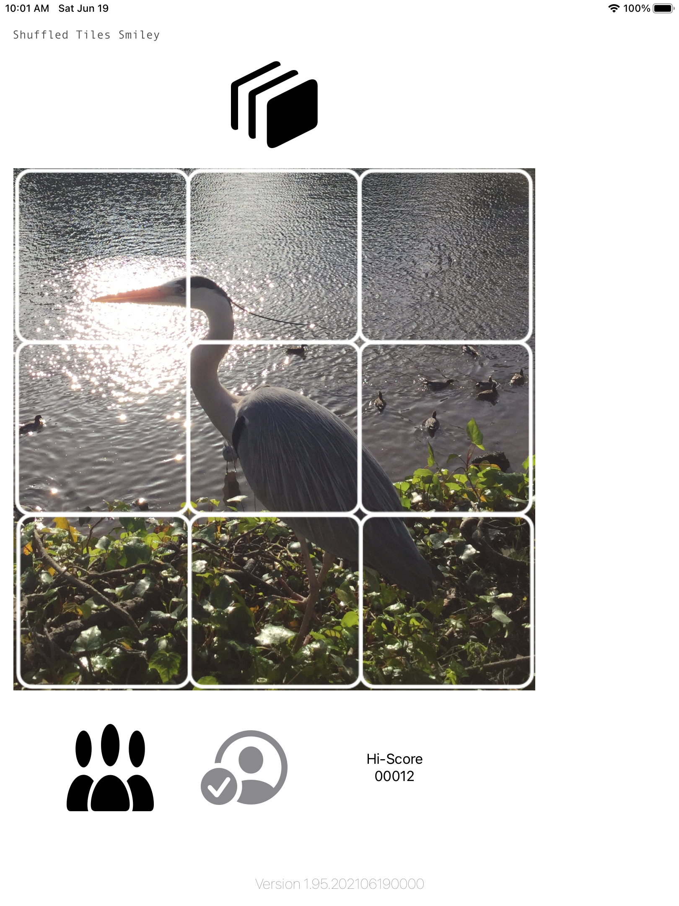
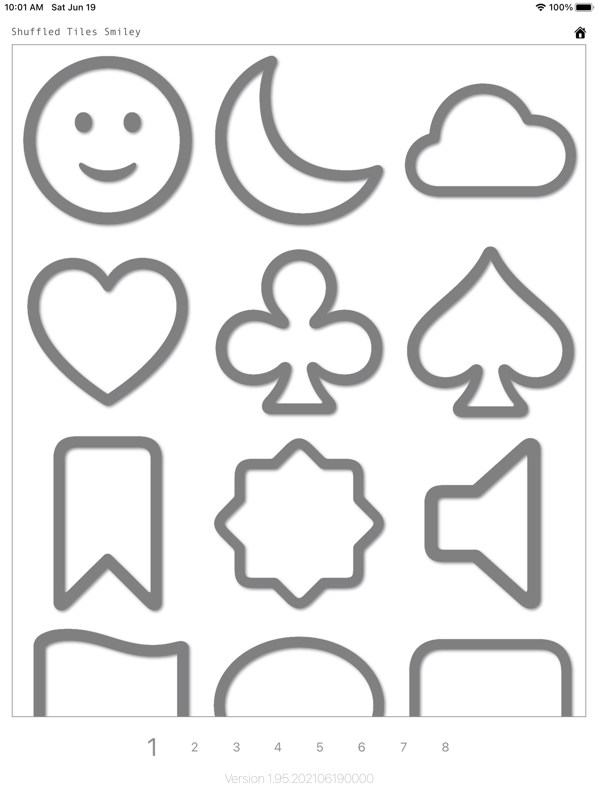
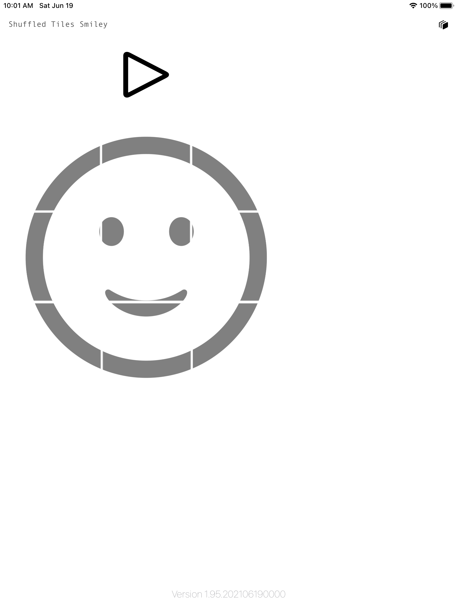
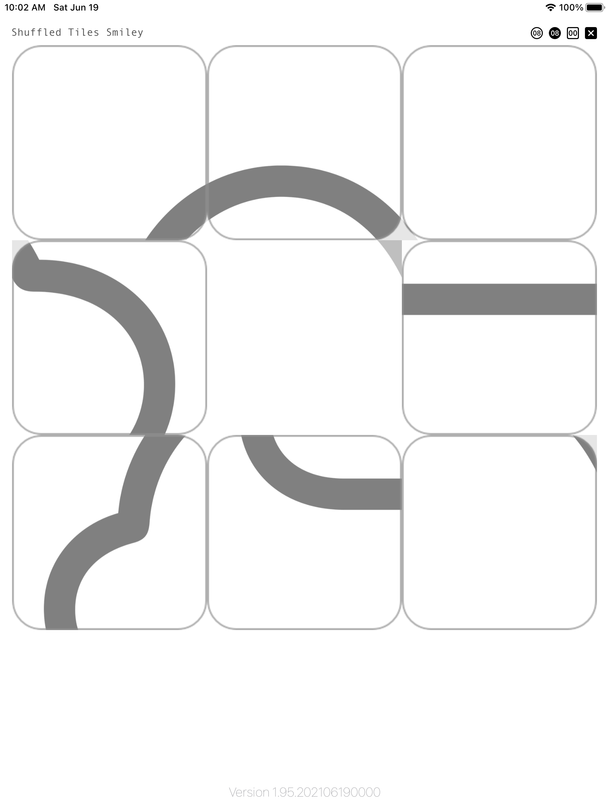
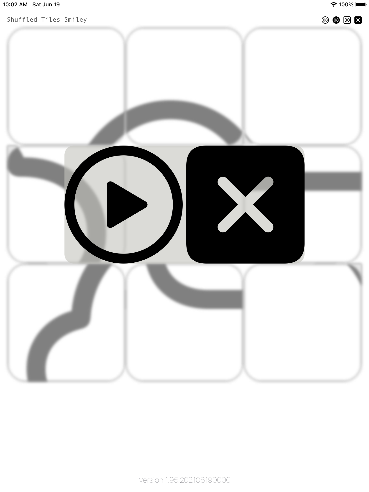
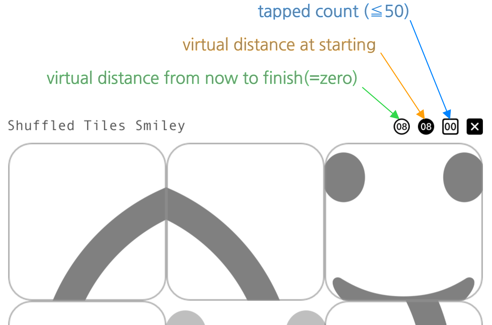

Shuffled Tiles Smileyについて
Shuffled Tiles Smileyについて更新：2021年6月18日 Ver.1.9
更新：2021年2月6日 Ver.1.2
更新：2020年9月17日 Ver.1.1
作成：2020年9月13日 Ver.1.0
(1) Shuffled Tiles Smileyについて
個人情報保護方針は、こちらです。
Shuffled Tiles Smileyについてこのアプリケーションは、分割されて(splitted)、シャッフルされた(shuffled)タイルたち[４分割/９分割/16分割]★を、 タップして並び直し、 単純な図形が描かれている分割前のタイルへと復元させるゲームです。 写真タイプのパズルと図形タイプのパズルの２種類のパズルを楽しめます。 ★ver.1.2/1.9は、9分割のみ。
This application is a game to recovery tiles before splitting. Tiles were splitted, and shuffled. You can split a tile into 4/9/16(★) tiles. If you tapped a tile(not a empty tile), you can swap a empty tile and a tapped tile. You can enjoy two types of puzzles, which are a photo type and a symbol type. ★ver.1.2/1.9 has a 3x3 mode only.
1.メニューバーにあるをタップして、好みの分割数を選択します。[ver.1.2/1.9：非対応]
2.メニューバーにあるをタップして、ターゲット画像選択画面を表示します。
3.好みのターゲット画像をタップして選択します。
4.選択された画像が表示されたら、タイルをタップすると、ゲーム開始です。[ver.1.2：この時、上方へタイルをスライドさせると画像選択画面に戻れます。]
4-1.メニューバーにあるをタップすると、答えを背景画像として表示したり、非表示にしたりできます。[ver.1.2/1.9：非対応]
4-2.メニューバーにあるをタップすると、残時間と総タップ数を表示したり、非表示にしたりできます。[ver.1.2/1.9：非対応]
5.ホーム画面にあるをタップして、GameCenterのLeaderBoardを表示します。[ver.1.9のみ対応]
ホーム画面
 (2nd generation) - 2020-09-13 at 15.30.31.png)
メニューバー
ターゲット画像選択画面
 (2nd generation) - 2020-09-13 at 15.30.40.png)
分割前の「スマイル」画像

4分割された「スマイル」画像
 (2nd generation) - 2020-09-16 at 17.48.28.png)
9分割された「スマイル」画像

16分割された「ゴミ箱」画像

残時間と総タップ数の表示：「スマイル」
 (2nd generation) - 2020-09-16 at 17.56.54.png)
残時間と総タップ数の表示：「ヒコーキ」
 (2nd generation) - 2020-09-16 at 17.56.43.png)
ホーム画面
❌ver.1.2は、ホーム画面がありません。ターゲット画像選択画面
 (3rd generation) - 2021-02-06 at 15.58.37.png)
分割前の「スマイル」画像：タップで、ゲーム開始！：上方スライドで、画像選択画面へ戻る。
 (2nd generation) - 2021-02-06 at 16.02.26.png)
9分割された「スマイル」画像

完成！の「スマイル」画像：タップで、画像選択画面へ。
 (2nd generation) - 2021-02-06 at 16.03.12.png)
ホーム画面(GameCenter：未サインイン)
ホーム画面(GameCenter：サインイン済)
ターゲット画像選択画面：数字をタップして、ページ切替え！
分割前の「スマイル」画像：をタップして、ゲーム開始！タップで、画像選択画面へ戻る。
9分割シャッフルされた「雲」画像
中断ダイアログ：をタップして、ゲーム中断！
プレイ画面
